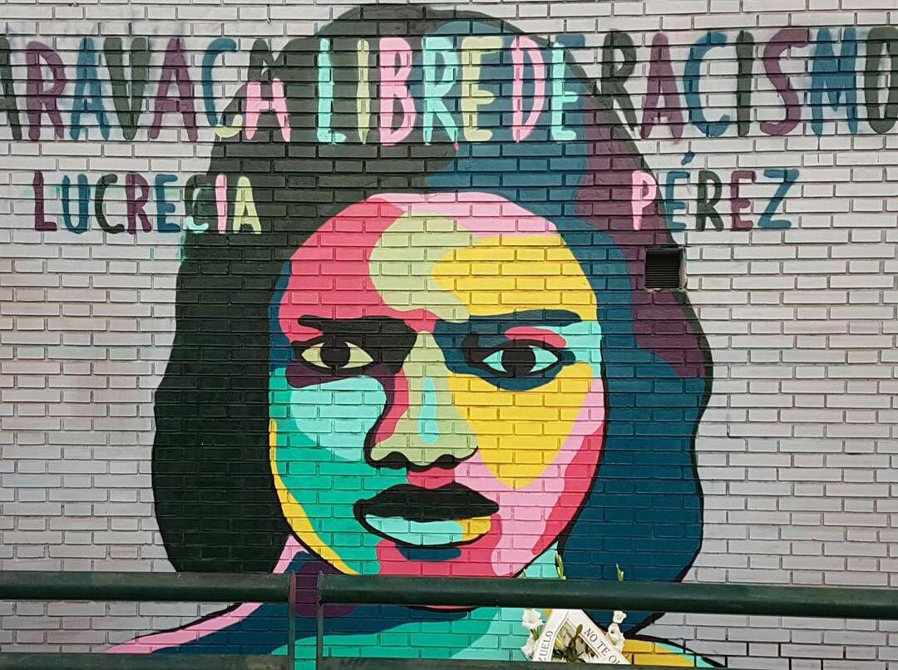

El blog de Kinkilleromedieval
El rap es un movimiento artístico-social que pertenece a la cultura del hip-hop. Esta entra en España con el grafiti, breakdance y las bases militares estadounidenses, que ya existían tiempo atrás, pero que recobraron importancia en el aspecto social, ya que el PSOE en 1982, propone el debate de “si España debería pertenecer a la OTAN o no”. También, entre los años 1984-1986 se da una “americanización” de la sociedad.
Pero el boom, llegará al final de la década, debido a la carencia de referentes en el rap hasta 1989, cuando tendrán éxito: MC Hammer, Vanila Ice y Young MC. No obstante, en nuestro país habrá que esperar un poco más para tener referentes nacionales. Sin embargo, dos discográficas importantes de la Movida Madrileña hicieron unos recopilatorios de rap de la década: “Rap’in Madrid” y “Madrid Hip-Hop” y un año después, Canal + usaría una canción de rap como campaña publicitaria. Otro aspecto importante a tener en cuenta de este género es que bebía del funk, pero en España en 1992 girará a algo más militar, tema trataré próximamente.
Este género entrará en crisis tras la censura de una letra de Jungle Kings por denunciar la 1ª Guerra del Golfo, lo que provocó que las discográficas dieran la espalda al rap y empezaran a producir música para la Ruta del Bakalao. Después de esto, los raperos entendieron que “mantenerse real” o “ser real” era no “siendo comercial”: no aparecer en anuncios, no fichar por grandes discográficas e incluso en locales o festivales putativamente mainstream, acostumbrados así a ser humildes, tanto que a más de uno se le olvidaba cobrar por su trabajo, un ejemplo de ello es El Chojín. A pesar de la mala racha que estaba teniendo, el rap seguía su curso con el “Príncipe de Bel Air” (1992) y el propio contexto del país (bonanza económica).
Pero, el “casus belli” por el que estalla el rap y se empieza a convertir en una moda, es el tiroteo que cometieron, en noviembre de 1992, en una discoteca abandonada en Madrid (servía como refugio para los inmigrantes) 4 encapuchados (periodo en el que el hooligan futbolístico estaba en auge en Europa), que mataron a la dominicana, Lucrecia Pérez. Este hecho provocó que el rap virara hacia lo antifa como respuesta a los neonazis y pasaran del funk, a algo más oscuro y militar. En esta etapa, se plantará la semilla de lo que conocemos por rap, como consecuencia de esa mezcla entre marginalidad y autodefensa, se le va a dar más importancia a la letra que a la melodía y las letras serán temas sociales o sobre cómo se rapea.
A principios de los 2000, los raperos empezaron a desligarse del estilo que había previamente. Por ello raperos como El Nach o El Chojin empezaron a academizar el mundillo del rap mediante: referencias literarias, de cine...e incluso en las batallas de rappers, la gente los equiparaba a los certámenes poéticos del Siglo de Oro. El Chojin, colaborará con instituciones públicas para concienciar sobre el uso del preservativo con su tema “Lola” o sobre la violencia de género con “el final de un cuento de hadas”.
Esto desarrollará una corriente de pensamiento en el mundo del rap, que el autor lo llama "rap virtuoso" porque las 3 virtudes que siguen son: 1) un rap que hace gala de su virtuosismo lírico, 2) un rap con una serie de virtudes ético-políticas y 3) un rap hecho por y para hombres.
Las industrias no entraron en crisis con la caída de Lehman Brothers (compañía financiera importante que se fue al garete con la crisis de 2008), sino que entraron mucho antes.
¿Por qué o cómo surge? Pues la explicación es que a principios del s.XXI la gente empezaba a usar aplicaciones y webs “piratas” como: Napster, BitTorrent o Emule, con las que la gente podía escuchar música o ver películas gratis. Esto supuso un duro golpe para la música, pues en 1999 el 90% de los ingresos era por la compra de discos (actualmente no llegan ni al 20%), lo cual provocó una concentración en el sector. Por lo tanto, si antes había 5 compañías , ahora con la piratería, serán 3 que controlarán el 25% de los negocios a nivel mundial y provocará una gran incertidumbre en invertir en jóvenes promesas.
Las dos alternativas para este problema eran: invertir en los conciertos o en discos de coleccionistas y en el “streaming”. Siendo Ziontifik el que tomará esta segunda vía y el primer colectivo de rap en hacer videos para todos y cada uno de los temas de sus discos, siendo los precedentes del desembarco del trap en YouTube. La otra alternativa es la de poner toda la carne en los directos, pero el problema de esto era que parecían misas de quinceañeros con ropa ancha y gorra calada, cuyas nociones de baile se limitaban a mover la cabeza y con un brazo arriba y abajo al ritmo de su párroco del verso preferido. En cambio, los herederos del gangsta rap, paliaron ese problema con unas strippers o modificando el ritmo de las canciones (acelerando el ritmo o ralentizándolo).
Si durante los primeros años de crisis económica española, el gangsta rap se convirtió básicamente en música de club, el rap virtuoso se recicló bajo la forma de las batallas de gallos. En 2005 se celebró la primera final de la Batalla Internacional de Gallos Red Bull y, desde entonces, muchos españoles han sido los que han participado en esta competición de freestyle como: Chuty, Skone o Arkano, pese a estar esponsorizados por una multinacional especializada en algo tan saludable para el proletariado como bebidas energéticas. Aunque el más “hipócrita” sería Arkano porque es el más comercial, dos ejemplos: el primero es que hizo un anuncio para las casas de apuestas (el nuevo “opio” del pueblo) del Real Madrid o que obtuvo el Record Guinness de más tiempo improvisando sin parar el 29 de octubre de 2016.
Red Bull instaló una pecera en la Puerta del Sol (Madrid) para que el rapero alicantino pudiera pasarse 24h haciendo freestyle, cuando en ese mismo día, el Parlamento español investía a Mariano Rajoy. Es decir, que lo que predijo Gramsci en su momento: “El viejo mundo se muere. El nuevo tarda en aparecer. Y en ese claroscuro surgen los monstruos”, efectivamente: lo viejo no acababa de morir porque Rajoy se mantenía en el poder y lo nuevo no acababa de nacer, además de ese mundo de monstruos: dos multinacionales, una de alcohol y otra de bebida energéticas, ocupando la plaza que fue madre del movimiento 15-M.